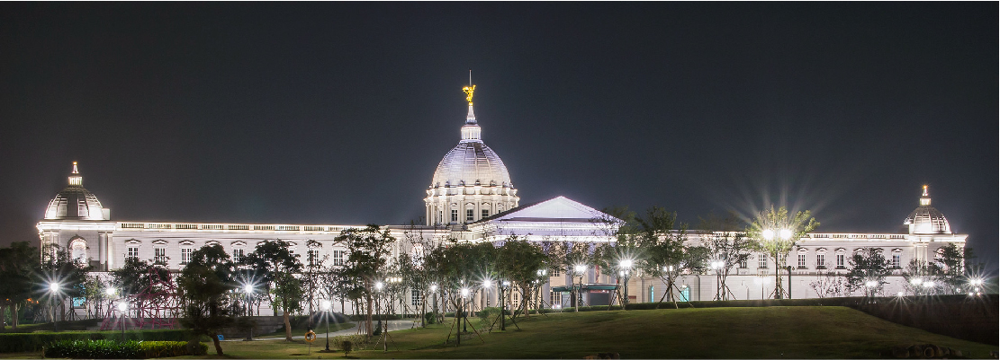
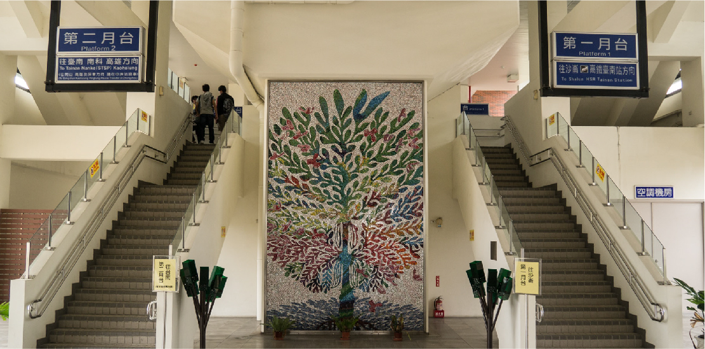

中洲站
長榮大學站
沙崙站
|臺鐵為了方便旅客轉乘高鐵，於民國100年1月2日正式啟用，臺鐵沙崙線列車取代原本搭高鐵接駁巴士，交通時間由原本50分鐘縮短至22分鐘。沙崙線全程皆為高架，還開了首例橫跨國道一號，為臺鐵捷運化轉型實例。特別的是路線還經過長榮大學內，還能搭到別具臺南特色的彩繪圖案列車，讓你的接駁時刻更有樂趣！

|當看到這樣的景象，會以為這是歐洲某處宮殿的景致吧，走過陽光下映著彩虹的阿波羅噴泉，穿過護城河上的橋墩，勇猛優雅的白色獅頭一字排開，橋面上莊嚴的奧林帕斯眾神也整齊陳列，走過橋面，博物館正面入口採高聳的圓頂造型及各面不同的希臘列柱設計，這樣的氣勢更能襯托出典藏寶物宮殿的華麗。
安置於博物館建築物最高點的「榮耀天使」雕塑，是臨摹法國雕塑家路易‧巴里亞斯(Louis-Ernest Barrias)的作品，這座手持桂冠和號角的榮耀天使，將永遠佇立於奇美館建築的最頂端，象徵守護這塊土地，榮耀世間的美好人事物。在2015年開幕的台南都會公園奇美博物館，主建築正面全長150公尺寬，高42公尺，耗資13億，是奇美集團的許文龍先生建造完成後捐贈給台南市的大禮物，開幕後也成為全台灣遊客甚至是國外遊客的必到之處。
|長榮大學位於台南歸仁，鄰近高鐵、中山高、南二高及機場，校門口設有台鐵沙崙支線「長榮大學站」，是全國校園內唯一有火車站的大學，位居交通樞紐。
